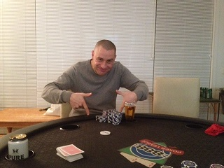
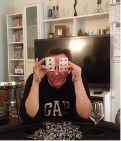

.....Poker, sport, sport and poker
| Date | Location | Game | Players |
|---|---|---|---|
| {{tournaments.tournamentOne[0].eventDate}} | {{tournaments.tournamentOne[0].location}} | {{tournaments.tournamentOne[0].tournament}} | {{tournaments.tournamentOne[0].noOfPlayers}} |
| Date | Location | Game | Players |
|---|---|---|---|
| {{tournaments.tournamentTwo[0].eventDate}} | {{tournaments.tournamentTwo[0].location}} | {{tournaments.tournamentTwo[0].tournament}} | {{tournaments.tournamentTwo[0].noOfPlayers}} |
| Position | Name | Points |
|---|---|---|
| {{result.position}}{{positionSuffix(result.position)}} | {{result.name}} | {{result.points}} |
| Bounty Winner |
|---|
| Steve W |
| Position | Name | Points |
|---|---|---|
| {{result.position}}{{positionSuffix(result.position)}} | {{result.name}} | {{result.points}} |
| Bounty Winner |
|---|
| Steve W |
| Position | Name | Played | Won | Win Ratio | Ave Points | Ave Position | Points |
|---|---|---|---|---|---|---|---|
| {{$index + 1}}{{positionSuffix($index + 1)}} | {{result.name}} | {{result.played}} | {{result.won}} | {{result.won / result.played * 100| number:2}} % | {{result.points / result.played | number:2}} | {{result.averagePosition | number:2}} | {{result.points}} |
 The third poker tournament eventually had 8 players despite the threat of all 10 invitees turning up at one point. The previous events 6 players returned along with Dave M and newcomer Simon M joining in the fun and games. A night of poker coupled with the British Lions rugby, Geelong versus Hawthorn and the Wimbledon ladies final meant there was plenty on offer for the testosterone laden household. 
Mark V was the target of the bounty prize but early on into the first game it was looking like he may take out first place again as he had several winning hands to increase his chip stack. The betting was at a moderate level letting lots of people to see the flops during the early games, but subsequent betting rounds soon weeded out the chaff. Lots of good winning hands including full houses, flushes and straights, but on more than one occasion the final two players both turned over nothing more than high cards which no doubt would have been won by another player had they stayed in!
Into rounds four and five, and the blinds were now starting to hurt peoples stacks but some large pots moving in Paul, Jade's, Dave's and Ben's direction kept their chip stacks healthy. Into round six and the game experienced the first casualty with newcomer Simon losing all his chips. By the second break, Brian, Steve and Mark all decided to re-buy as their stacks were below $500 with the hope of hitting some good luck after the rest.
Returning from the break, the poms were smiling as the Lions had won the final rugby game, and may have caused some distraction as it wasn't long before the previous events double champion Mark V was next out. Despite some good early wins, some unlucky losses to slightly higher cards saw his chips depleted with Steve having the honour of taking his last chips and winning the first bounty. Brian didn't last much longer as his chip stack was being blinded out with no decent cards to play. The final five players kept plugging away but into round 8, the blinds were at a massive $500, $1000 with a $100 ante so it wasn't going to last much longer. After seeing his previously won chip stack depleted, Dave was next out in 5th, followed by Steve in 4th just missing out on the bonus points but at least left pondering how he would spend the massive bounty prize!
The last three players Jade, Ben and Paul were now being forced into decisions about their cards as the blinds were now $1000, $2000 with a $200 ante. Not having much choice Paul was all-in with his remaining chips, but his cards were not good enough to hold on, and was out 3rd. A few more hands saw Ben's chips moving towards Jade's stack before a deal was struck to end the game with Jade crowned the victor and Ben returning to his rightful second position...."Always the bridesmaid.....never the bride", but you cannot argue with the consistency!
Tournament two recommenced with Paul smiling after a 10 point Cat's win, but he had to concentrate as again the first hand went into a betting frenzy. Culminating with a $500 bet from Mark (50 times the big blind and half his stack), his bet was called, but this time, Mark didn't have the luck so was not off to his customary flying start. Lots of paired boards, with the flop showing two 9's on three occasions meant all kinds of interesting potential hands. Jade was betting strongly but hoping that his high kicker card was enough to take down the pot but missing out to other peoples cards that completed full houses.
Before the first break Jade was given his secondary $1000 as he lost of all his chips, and Simon observing how Jade won the first tournament, must have been following his tactics closely as he also lost his chips and was given another $1000.
Returning from the first break with everyone cashed up and lots of empty wine bottles, stubbies and cans showcasing the state of sobriety, no doubt influenced the betting patterns. Jade was soon forced to re-buy as the table area in front of him was bereft of chips. Being the new bounty target had people salivating at the potential windfall and it wasn't long before Steve again pounced on the wounded prey and meant and early exit for Jade. From first place to last place, but he did have the fallback of the tennis to watch in the adjoining room.
Like King Canute trying to hold back the tide, peoples stacks had no respite from the ever increasing blinds and despite the glow of the double bounty hunter, Steve was next out in 7th. With Jade providing running tennis commentary especially with reference to the world breaking rotundness of one of the players, Dave was next out in 6th followed closely by Brian in 5th.
Simon was now starting to find some form and won four hands in a row promoting him to chip leader. This left Mark perilously close to elimination and indeed he could not hold on and was out in 4th. Simon, Paul and the customary high finishing Ben were left in the top three but Simon was playing his cards well and not letting the others get a foothold. Ben was pushing in chips dominantly but could not hold off the attacks from both Paul and Simon and was out in 3rd, giving him more bonus points for the ladder.
Previous event form meant nothing to Paul as he fought it out on the big stage in front of jealous spectators. Jade returned for moral support and informed the congregation that the wimbledon winner had no trouble lifting the trophy.
The clock was again highlighting how Saturday had given way to it's neighbour Sunday, but everyone stayed as massive blinds were soon going to deliver a winner. Simon's larger stack had some protection from the onslaught, and was enough to see off a determined Paul who was desperate for a win. The last hand was played with Paul pushing all his chips into the middle, but his cards were no match for Simon's normally folded 6-3 off suit which paired the board and fended off the final attack. Simon was basking in the early morning glory after so nearly going out in the early rounds but was crowned the worthy winner. A massive second tournament improvement as he went from last to first (The polar opposite of Jade for the night). Another newcomer, and another winner. It's what brings them back for more!
So what can we say after another successful event. Firstly, thanks to Steve for providing the location and ice bucket conducive to a good nights play.
The ladder is now starting to take shape and clearly showing Ben as the most consistent player so far, but still seeking that elusive win for the icing on the cake. Jade soars up to joint 2nd place with Brian, both on 31 points (only shown as third as sorted by alphabetical order), and would have been second outright with any higher placing in the second game. Paul might be similar to Geelong's style, who often start slowly, as his momentum catapulted his ladder placement northwards from 8th to joint 4th place (On the same points as Steve, but higher until Steve changes his name by deed poll to Aardvark or something similar). Mark V (who could not quite reproduce his first events success) rounds off the congested middle of the table, with a small gap to the remaining players. Mark L ready to move up from 7th place (if he can sort out his diary arrangements), extra consolidating points for Dave and positive early points for Simon round off the top 9 placings. Obviously we still await the return of Mark L, who can make a claim to the top dog moniker if average points per game were chosen as the metric!
Event IV.....It's gonna be bigger, better, maybe earlier and coming to a house near you soon....